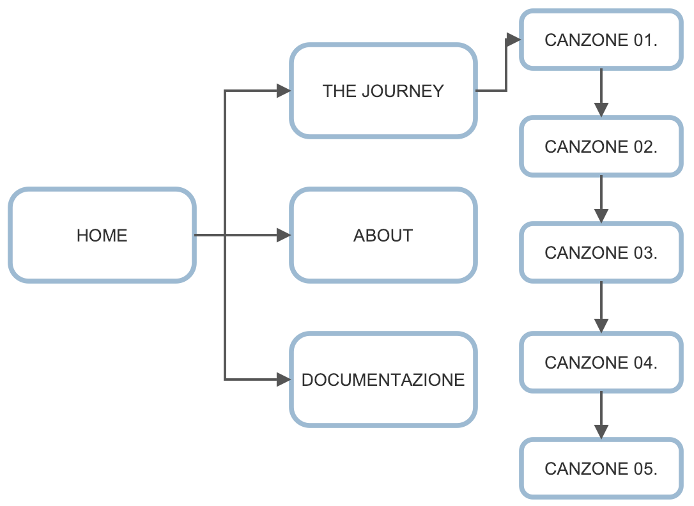

L’idea nasce dalla passione che ci accomuna per i film della famosa casa di produzione “Studio Ghibli”. Facendo un sondaggio tra i nostri coetanei abbiamo constatato che sono in pochi a conoscere la brillante mente che ha composto e dato vita alle colonne sonore, famose per la loro capacità evocativa e suggestiva. Il nostro sito si pone dunque l’obbiettivo di accompagnare l’utente nell’ascolto e approfondimento delle musiche, fornendo un’esperienza completa di trame, curiosità e ascolto attivo.
L’obiettivo del sito è quello di appassionare l’utente non solo ai film ma anche alle musiche che li accompagnano fornendo una guida alle colonne sonore dei singoli film, affiancate da trame e curiosità.
Il nostro target spazia nelle età e negli obiettivi. Data l’offerta del sito, tendenzialmente il target si suddivide in tre categorie:
L’architettura della pagina è semplice, dato che si articola in una principale schermata scorrevole e una pagine secondaria contenete la documentazione.
La palette cromatica si basa sul logo della casa produttrice e sui paesaggi naturalistici ricorrenti nella maggioranza dei film. Infatti il background è un’immagine presa direttamente da una delle animazioni e scorrendo attraverso il sito incontriamo diversi dei personaggi più celebri. La scelta del font si è ispirata alle linee morbide e tondeggianti che caratterizzano le immagine dei film (per i titoli e la home: "darumadrop one cursive"; per i paragrafi: "quicksand sans-serif"). In generale il sito cerca di mantenere la sensazione di serenità di un mondo fantastico che trasmettono i film.
A differenza di altri blog il nostro sito offre fruizione diretta di contenuti musicali e informativi.
L’obiettivo del sito è quello di intrattenere e appassionare l’utente tramite una user experience completa di audio, testo e immagini.
Non possiamo definire un target per il nostro sito su base demografica. Generalmente il target della casa di produzione sono bambini, tuttavia gli approfondimenti portati nel nostro sito si rivolgono ad un pubblico appassionato di musica, cinema e arte. Perciò non è possibile raggruppare il target in una sola fascia di età.
La promozione del sito è avvenuta tramite pubblicizzazione su Instagram, Facebook grazie a pagine dedicate.